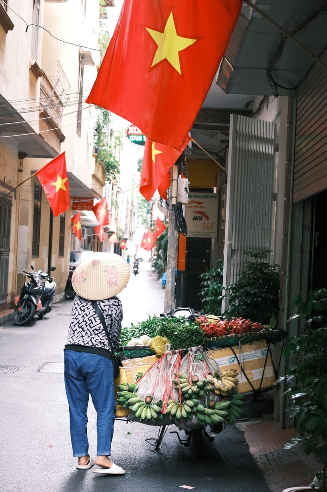
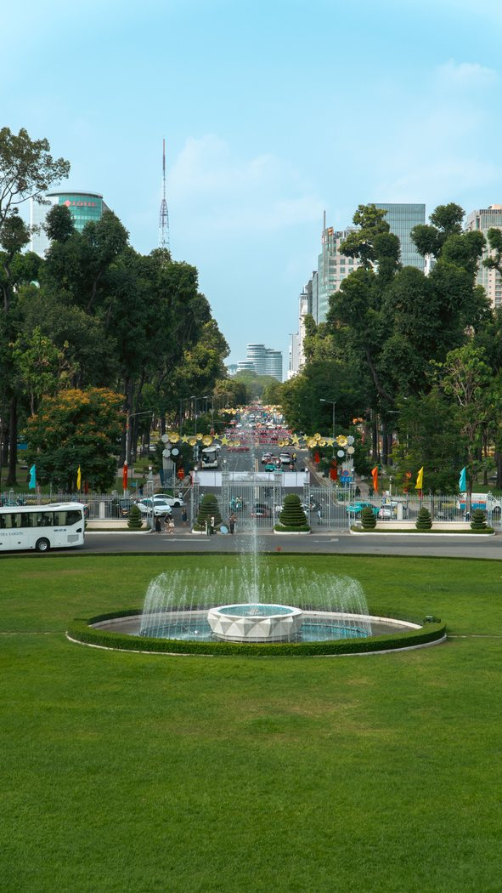

With a child on a bike in Vietnam: rules, helmets, fines
In Vietnam a whole family on one bike is a normal sight, and visitors get the impression there are no rules. There are, and since 1 January 2025 they have become noticeably stricter: the 2024 Law on Road Traffic Order and Safety and the fines decree No. 168/2024/NĐ-CP are in force. Below is exactly what they say about children, without guesswork.
How many passengers you can carry
The basic rule: one passenger on a motorcycle or moped. But Article 33 of the 2024 Law directly provides exceptions, and one of them is carrying a child under 12: in this case up to two passengers are allowed. The other exceptions are taking a sick person to a medical facility and escorting an offender.
So an adult + a child under 12 is a legal combination. An adult + two schoolchildren over 12 is already a violation.
Helmet: from what age it's required
A helmet with a fastened strap is required for the rider and the passenger. Only children under 6 are exempt (and separately, sick people in emergency transport). So from age 6 a child must wear a helmet just like an adult.
The fine for riding without a helmet is 400,000 – 600,000 ₫, and it's issued for each person without a helmet, including the passenger. Plus a point more important than the fine: a child's helmet must be a children's helmet. An adult helmet wobbles on a child, shifts in a fall and barely protects. How to choose by size and fit — in how to choose a helmet in Vietnam.

Can a child sit in front
This is where people most often get it wrong. A rider is forbidden to ride with their arms around a person sitting in front — and the only exception in Decree No. 168/2024 is for a child under 6 sitting in front. The fine for breaking this rule is heavy: 8,000,000 – 10,000,000 ₫ plus suspension of the right to drive for 10–12 months.
In practice: the law allows a small child (under 6) in front; a child aged 6 or older must ride behind the rider, in a helmet, not between your arms and the handlebars.
Separately about 50cc
A 50cc bike has limited power. Formally it carries two, but in practice everything changes with a passenger: acceleration gets lazy, braking distance gets longer, speed drops on climbs. With a child on board that means slowing down earlier and keeping a bigger distance. We covered the physics of riding two-up separately — can two people ride a 50cc, and how to ride a 50cc uphill.
How to seat a child: a short routine
- The helmet is on and fastened before getting on, the strap two fingers under the chin.
- Closed shoes; no flip-flops or loose laces near the chain and wheel.
- The child gets on after you, when the bike is already standing steadily on both your feet.
- Hands hold your jacket or belt, feet on the footrests, not dangling.
- One agreement before starting: sit still, don't wave your arms, don't turn around; if something's wrong, say it, don't tug.
- The exhaust is at the bottom right — it's the most common source of children's injuries. Explain this and seat the child from the left side.

Route and timing
With a child it's worth planning rides differently: short legs of 15–20 minutes, along wide streets, outside rush hour and not in the rain. The midday sun is harder on children than on adults — water and a hat are a must, and it's better to skip midday. There are separate articles on heat and rain: riding in the heat and the rainy season in Nha Trang.
When it's better not to take a child
- the child falls asleep on the way — that's dangerous on a bike, they need a car or taxi;
- there's no children's helmet in the right size;
- rain, darkness or an unfamiliar highway route;
- you got on a bike yourself only a few days ago and aren't yet sure of the brakes and balance.
Taxis in Vietnam are cheap, and in these cases they're objectively the right choice. A cost comparison is in bike or Grab in Nha Trang.
Short conclusion
The law allows you to carry a child: under 12 they count as an exception to the “one passenger” rule, from age 6 a helmet is required, and only a child under 6 may sit in front of the rider. Everything else is about a speed margin, the route and a sound bike. Ready 50cc bikes with papers are in the catalogue.